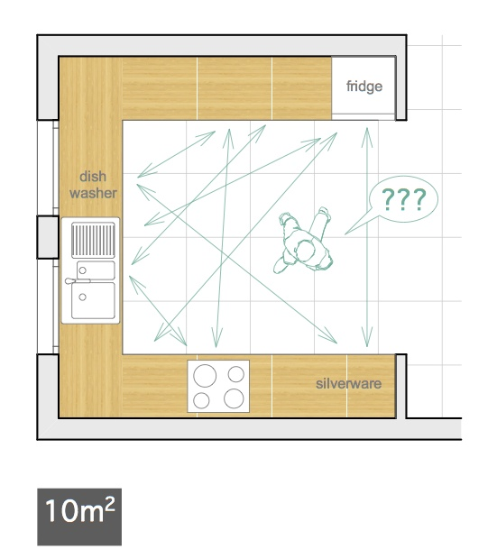
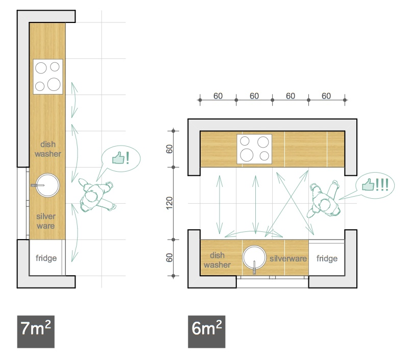

Katarzyna and I disagree about many things (such as the merits of tango and the Paleo diet), but we both agree on the importance of living minimally and independently. Katarzyna is an architect; she sees her life as a room with limited space which she inhabits. We've written this article to give you some renovation tips for your life: how to tear out the impractical, oversized decorations which only get in your way, and build your life into the perfect, practical kitchen for cooking up your tasty projects.
A good architect knows that a fully equipped, practical, and optimally comfortable kitchen can be built within seven square meters. The bigger you build it, the less practical and comfortable it gets, and the more it costs. If your fridge is too far from the counter, you will walk a marathon every day taking food out of it.
The best kitchen is one which is matched to the dimensions of the human body, and the tasks being performed. The perfect kitchen has one or two tracks; a classic linear style. The way you arrange your appliances is also important.
Your life is no different. If you dont tailor it appropriately to your needs, it will be less comfortable and less practical. And it may cost too much.
Your life should be the perfect kitchen: of manageable scale, and everything easily within reach.
The spiritual virtues of thriftiness aside, the true goal of downsizing your life is to maximize the time you could survive without working. If you could halve your costs, your savings might last 6 months instead of 3 months. It could mean the difference between enough time to start your dream business, or just enough time to find yet another dead-end job.
If you are running a business with lower costs, you will be less pressured to take on bad customers who will waste your time. You will be able to work less, and put more time into developing your IP (intellectual property) pool. That IP pool can start paying 100% of your costs sooner if your costs are lower.
If you are already in a job, your employer will have less of a hold over you if you have lower costs at home. If they know you have a massive mortgage, high insurance costs, or other financial drains, they can push you around without fear of you quitting.
If you have children or dependents to support: it's not something we've had to deal with, so let us know what it's like. I'm not a financial consultant, let alone a child psychologist, but research shows that the main influence on the success of your children isn't how much you spend on them. It's what sort of person you are yourself, and the quality time you spend with them. Cut your costs and you can spend more time with your kids.
We're social, heirarchical apes which need their position in society validated. The methods of signaling status depend on the culture, but are often material.
In the past, the only displays of public imagery were religious. Today, consumption is our new state religion, and religious murals have been replaced by advertising. The two commandments of this religion are: "look after yourself first", and "buy stuff to be happy". Your position in society isn't handed down by God any more (the "divine right of kings"), it comes from owning a big house and the latest iPad.
The people who matter won't be dazzled by baubles bought on credit, so don't be distracted from the real game of making your time on this planet worthwhile.
Downsizing your life is not just throwing stuff away; it's exchanging your useless ballast for cash, mobility, and time. What about that furniture you never use which takes up so much space? If you sold it, how much could you get? Enough for new, smaller furniture? Maybe just enough for a pizza? Well, if you're not using it anyway, we know a great pizza place!
Now think about ALL the stuff you never use: furniture that just gets in the way, the TV which has been gathering dust since YouTube began, the old coffee machine you dont even know how to use. The iPod that you've never used since you put your songs on your iPhone. That other old phone in the drawer (actually, give that one to James - he needs old devices to test his apps). Those books which look smart, but you've already read. Ah, the bread machine. You can make bread in five minutes with a spoon, a bag of flour, salt, yeast, and a bowl.
Add it up. Chances are, you'd get enough money for some nice trip if you sold all that. Now your apartment feels kind of empty. You could downsize and save rent.
Enough has already been written about money-saving tips, but be careful which ones you start with. Keep in mind Donald Knuth's words:
Don't stress the small things: just go after the big, easy cuts first. For example, don't torture yourself by buying the cheapest, nastiest coffee to save a few cents, while you have an unused extra room in your house which you could easily rent out and save yourself hundreds a month.
Buy a few good items which will quell any monkeyish yearnings for social status signifiers. If you feel good stuff against your skin all the time, you will feel better about yourself, and be less likely to go out and buy a big car. They are also a better investment in the long run.
Buy good leather shoes and get them reheeled when they need it. It's not only cheaper; it's better than being a grown adult who still wears the same style of sneakers that their mother bought them when they were ten.
Buy quality, timeless, clothes instead of rubbish that falls apart after a few washes or goes out of date.
If you're a woman, you have a bigger problem. No matter how big your wardrobe is, you never have anything to wear. Take Katarzyna's advice and buy quality stuff on sale, with matching colours. Previously, Katarzyna would only buy white, beige, and navy blue, with some red items as accents. You could literally take any clothes from her wardrobe (only 60x120cm) and they would always fit together. Now she's refined the system; all of her clothes are beiges or whites. They always look natural and timeless. She can add any colour to it she likes, so she never gets bored.
Examples from Katarzyna's wardrobe on Pinterest
Until I got my business going, I put aside 1-2% of every contract to buy myself a present. I was feeling worried that society would reject what I had to offer, and this kept me motivated. Now that the business is running, I couldn't be bothered even going to the store to find something; doing what I want is enough reward.
James
Usually the biggest cost in your life. According to Katarzyna it should never exceed one third of your net income. In James's family, it's one quarter. If it ever exceeds this, boy are you in trouble.
It's easy to forget, especially if you've lived in your apartment for a long time, that it's just a box. You may like it, feel great in it, think you couldn't live anywhere else, but you could live anywhere. Maybe even in a small room in a shared apartment. You think that's not for you? Think of the money you would save. Think of the time you would save by only having to clean up half the time. Why crawl back to a cold, empty bachelor pad?
Take it a step further and start or join a big commune of like-minded people. Share all your stuff with the household to save money and overcome your hoarding instinct. James lives with a big lively crew of dancers, artists, and businesspeople, who all support each other and work together. It even got to the point where the household decided to throw all the single guys into the one dorm room to have more shared space for projects. It's amazing how efficiently you can live with the right people, and have a better social and working life at the same time.
Don't get distracted by the dumb monkey games of society.
Your life's a kitchen. Keep it simple, small and well planned. You only have limited room for things in it. Plan it according to your current needs. Plan it so you don't waste time running from the fridge to the counter.
Please write. It's nice to hear your thoughts and suggestions, and I can work them into future posts. It's all about collaboration.
James Hudson and Katarzyna Terlikowska
Needless to say, this blog isn't financial or legal advice, an excuse for getting fired, or promising that any of these ideas will work for you. The companies or people I mention may not agree with my opinions here. Don't do anything reckless, damaging or hurtful to anyone! In the future you might need your bridges unburnt.